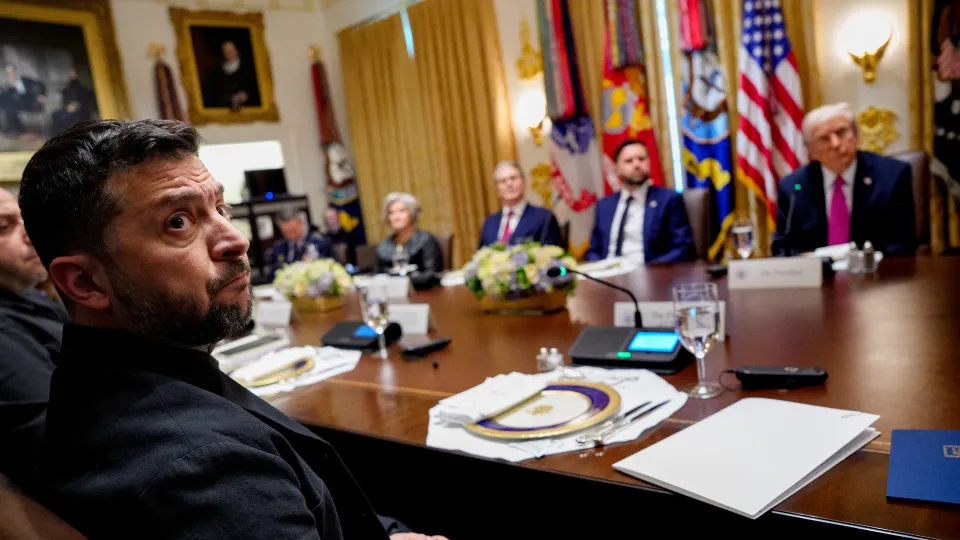

世界苦茶10月18日新闻 | 34条 | 何卫东等九名将领被开除

何卫东等九名将领被开除 | 美豪华邮轮取消上海行程引不满 | 中美紧张局势缓和，贝森特确认通话 | 泽连斯基与特朗普会晤 | 特朗普继续瓦解美国
苦茶数据
美元兑人民币：7.12（昨日7.12，前日7.12）
美元兑日元：150.42（昨日149.90，前日150.72）
上证指数：休市（昨日3839，前日3927）
标普500指数：休市（昨日6664，前日6629）
比特币：106891（昨日107584，前日111630）
布伦特原油：61.29（昨日60.90，前日62.33）
中国新闻
• 美豪华邮轮因拒缴港务费取消上海行程。
美国豪华邮轮“Riviera”号据报因拒绝缴纳中国新出台的特别港务费，取消上海行程，引起乘客不满。财新网引述知情人士报道，载客数为1250人的访问港邮轮“Riviera”号9月18日从美国西雅图出发，10月4日抵达日本。结束日本九天的行程后，原计划星期三上午抵达中国上海，但因为不想承担特别港务费，修改航线前往韩国釜山港。中美经贸摩擦近期延烧至海运和造船业，中国星期二起对停泊在中国港口的美国船舶征收特别港务费，按每净吨400元计收，之后逐年增加。以此计算，“Riviera”号须缴纳的特别港务费约为1167万元。由于净吨较大，豪华邮轮单艘所收的费用高于普通货船。一名上海邮轮港人士称。
• 何卫东等九名上将齐被开除 四中全会或增补军委副主席和委员。
中共二十届四中全会即将在下星期一召开之际，中国国防部通报，中共中央军委副主席何卫东、军委政治工作部原主任苗华等九名解放军将领“涉嫌严重职务犯罪”，被开除党籍、军籍。九人涉嫌犯罪问题将移送军事检察机关依法审查起诉，意味着他们很可能难逃牢狱之灾。这也是68岁的何卫东在失踪七个月后，首次被官宣落马，成为首个落马的二十届中共政治局委员。受访学者分析，这相信是中国改革开放以来，一次过最多高级将领被开除党籍和军籍的一回，相信也是第一次有军委副主席在任上被“双开”，令人震撼。另有学者形容，被开除将领人数之多、位阶之高，前所未有。四中全会预料将增补军委副主席和军委委员。
• 北京就延迟的“超级大使馆”与英国发生争执。
中国共产党周五就英国政府推迟对一处有争议的“超级大使馆”提案作出决定，严厉抨击了英方。外交部发言人林建表示，如果位于伦敦塔附近、预计将成为欧洲最大使馆的这座占地2万平方米的中国大使馆的规划许可被拒，英国将“承担一切后果”。北京于2018年以2.55亿英镑购买了该拟建使馆用地。英国地方与社区大臣斯蒂夫·里德必须就该建筑申请作出最终批准或拒绝的决定，该申请在英国议会的对华鹰派中引发了激烈争议。
• 美菲海军演习结束后，中国在黄岩岛附近开始演习。
中国在黄岩岛附近开始军演，正值美菲海上联合作战演习最后一天 在周四发布的一则公告中，中国海事局表示，此次“军事训练”将在由四个坐标点划定的区域内进行，演习期间所有船只不得进入该海域。演习始于美菲年度海上联合演习的最后一天。美菲联合演习于10月6日在苏禄海及毗邻南海的菲律宾巴拉望岛海域展开。据美国海军学会旗下媒体USNI News报道，这场代号为“Sama Sama”的为期12天的海军演习还有日本，加拿大和法国参加，出动军舰和飞机进行了实弹射击演练，并开展反潜，反空等多项战备演习。菲律宾官方通讯社报道，训练还包括海上补给接近，空中防御演练以及联合反潜演习。
• 欧洲议员会晤中国人大代表 就台湾议题发生争论。
欧洲议会议员和中国人大代表举行了2018年以来第一次正式会谈。据《南华早报》报道，有欧洲议员表示“台湾不属于中国一部分”，遭中国代表批评“不懂历史”。周四，欧盟议员和中国全国人大代表团在布鲁塞尔会晤。这是双方自2018年以来，首次举行正式会谈，且已同意明年会续办。从2021年起双方暂停往来，当时欧盟就新疆维吾尔人受压迫而制裁中国官员，北京随后也制裁多位欧洲议员，包含德国绿党的包瑞翰。不过，中国在今年初单方面解除了制裁，外界猜测中国可能希望恢复当时被冻结的欧中投资协议谈判。
**• 杨振宁10月18日在北京逝世，享年103岁。 **
印太新闻
• 美国议员敦促特朗普出席关键的印太峰会。
一群两党议员敦促特朗普出席关键印太峰会，并向中国传递明确信号 议员在信中称，特朗普出席峰会将是对北京在该地区开展外交攻势的有力回应 一批两党美国议员敦促总统唐纳德·特朗普亲自出席今秋三场重要印太峰会，警告称若他缺席，可能会在北京积极扩大地区影响力之际将战略优势拱手让给中国。国会成员周五发布的信中强调，印太地区仍“对美国的安全与繁荣至关重要”，并处于与中国的“战略竞争”核心地带。本月早些时候，马来西亚外长莫哈末·哈桑宣布，特朗普将访问该国并见证他曾促成的东南亚邻国泰国与柬埔寨之间的停火协议。
• 高市早苗为靖国神社供奉祭品 预计不会亲自参拜。
政治日本 高市早苗为靖国神社供奉祭品 预计不会亲自参拜 2025年10月17日可望成为日本第一位女首相的高市早苗，在靖国神社秋季大祭首日供奉祭品，但预计不会亲自前往参拜。日本最有希望成为下任首相的候选人高市早苗，周五向靖国神社供奉祭品。据日本官员透露，预计她不会亲自前往参拜，以免激怒亚洲邻国。日本首相石破茂周五配合靖国神社秋季大祭，以首相名义供奉了祭品。首相在春秋两季例行祭典期间为靖国神社供奉祭品是一种常见做法。共同社报道，靖国神社秋季大祭从17日持续到19日。相关人士透露，石破茂不会在秋季大祭期间前往参拜。日本官员向法新社透露，高市早苗于周五早上为靖国神社献上了供品。
科技新闻
• 一则共和党抨击广告用人工智能对查克·舒默进行深度伪造。
一则共和党攻击广告用人工智能深度伪造了查克·舒默的形象。参议院共和党人发布的一则新攻击广告使用了舒默关于政府停摆的真实言论，但以民主党参议院少数党领袖的 AI 深度伪造影像呈现。全国参议院共和党委员会周五在 X 和 YouTube 发布的这段30秒视频引发担忧，许多观察人士警告称这突破了政治领域的新界限，可能会引发大量 AI 生成的深度伪造攻击广告。该视频在 X 上的配文为“舒默停摆第3周：‘每天对我们都更好’”，画面显示一位 AI 生成的舒默反复说出这句话并咧嘴微笑。
• 在出现“不敬的描绘”后，OpenAI封禁了Sora上的马丁·路德·金视频。
在金的遗产管理方抱怨出现“亵渎性描绘”后，OpenAI 已在其 Sora 应用上屏蔽用户制作马丁·路德·金的影片。自三周前该公司推出 Sora 以来，关于金的超逼真深度伪造视频在社交媒体上大量传播，视频中他被剪辑成说下流，冒犯性或带有种族主义的话，甚至有伪造视频显示他在超市偷窃，从警察处高速逃逸并强化种族刻板印象。周四晚些时候，OpenAI 与金的遗产管理方发布联合声明称，正在屏蔽以金为形象的 AI 视频，“为历史人物加强防护措施”。OpenAI 表示，允许用户制作历史人物的 AI 深度伪造作品涉及“强烈的言论自由利益”，但遗产管理方应对这些肖像的使用拥有最终控制权。Sora 应用仍为邀请制。
• 消息人士称，美光在禁令后将停止在中国的服务器内存芯片业务。
美光在禁令后将停止向中国数据中心供应服务器内存芯片：消息人士称 两位知情人士称，美光科技计划在其产品在中国关键基础设施中自2023年被禁后，停止向中国的数据中心供应服务器内存芯片，因为业务未能从禁令中恢复。美光是首家被北京针对的美国芯片制造商——此举被视为对华盛顿一系列旨在阻碍中国半导体产业技术发展的限制的报复。此后，英伟达和英特尔也遭到中国监管机构和行业组织指控其产品构成安全风险，但尚未出现监管行动。不过，知情人士表示，美光将继续向两家在中国境外拥有大量数据中心业务的中国客户供货。
• 维基百科表示AI导致人类访问量显著下降。
维基媒体基金会表示，正观察到在线百科全书的人类访问量显著下降，因为更多人正在通过生成式AI聊天机器人以及总结其内容的搜索引擎获取维基百科上的信息，而无需实际点击进入该网站。这对维基百科的长期可持续性构成了风险。基金会产品高级总监马歇尔·米勒在博客文章中表示：“ 我们欢迎人们获取知识的新方式。然而，使用维基百科内容的AI聊天机器人、搜索引擎和社交平台必须鼓励更多访问者前往维基百科，以便让如此多人群和平台所依赖的自由知识能够持续流动。随着维基百科访问量的减少，可能会有更少志愿者来扩展和完善内容，也可能会有更少个人捐赠者来支持这项工作。”
经济新闻
• 中国第三季经济增速料降至一年来最低。
中国第三季经济数据公布前夕，分析师普遍预计经济增速将降至一年来最低，并期待中国政府尽快推出新一轮经济刺激措施。路透社和法新社调查的经济师均预测，中国国内生产总值同比增幅将从今年第二季的5.2％降至第三季的4.8%，彭博社调查的预估中值更低至4.7%。彭博社调查的分析师预测，9月中国零售额同比增长3%，工业产值同比增长5%，增速均为今年来最低；房地产和固定资产投资也将进一步恶化。路透社调查显示，分析师预计中国第四季GDP增速放缓至4.3%，全年增长4.8%，低于5%左右的官方目标。
• 受英国制裁后 中国港口仍持续接收俄罗斯液化天然气。
英国星期三将中国广西北海液化天然气接收站列入实体名单的一天后，载有俄罗斯液化天然气的油轮便停靠广西北海市的港口，显示北京无视西方对俄罗斯的制裁，持续与俄国贸易。船舶追踪数据显示，俄罗斯籍“北极木兰号”油轮，星期五抵达北海液化天然气接收站。船上的燃料源自俄罗斯北极LNG二号项目，于10月初在俄罗斯东部装船。这是该项目的液化天然气第三次运抵北海。英国政府在当地时间星期三对俄罗斯能源产业和军工业实施新一波制裁，包括北海液化天然气接收站在内的11个中国大陆和香港实体，因支持俄国能源行业而被列入制裁名单。虽然制裁包括至11月13日的缓冲期，但至少有一批从北极运往中国南方的液化天然气。
• 随着贝森特确认已与对方何立峰通话，中美紧张局势缓和。
美国财政部长贝森特确认与对口官员何立峰通话，美中紧张局势缓和 在威胁征收100%关税和限制稀土出口后，谈判重启，标志着在特朗普与习近平会晤前贸易战暂时休战 。美国财政部长斯科特·贝森特证实，将在周五与中国副总理何立峰通话，此举进一步显示在两国领导人可能会面前紧张局势有所缓和。 “这位副总理，也是我的对口官员，我和他今晚大约在8:30、9点左右会通话，”贝森特周五在白宫表示。这位财政部长补充说，何立峰也将与他和一个代表团“大概在明天起的一周后”一同前往马来西亚，为美国总统唐纳德·特朗普与中国国家主席习近平的会面做准备。
• 特朗普确认将与习近平会面，称对中国征收100%关税“不可持续”。
特朗普确认将与习近平会晤，放弃对华100%关税主张：“不可持续” 这位美国总统语气软化，但将北京对稀土的管控指为在亚太经合组织峰会会谈前“逼”出高关税数字的原因 与一周前的强硬立场相反，美国总统唐纳德·特朗普周五表示，他计划在两周后于韩国会见中国国家主席习近平，并暗示对所有中国商品再加征100%关税似乎行不通。但他也将最新一轮贸易谈判僵局归咎于中国。“这不可持续，但那就是数字，”特朗普在福克斯新闻上说，暗示北京几乎没给他别的选择，只能提出如此高的数字。（翻評：所以呢？北京加大稀土出口管制，美方的對應手段是？）
• 又一轮“she-cession”正在显现：女性以惊人的速度退出劳动力市场。
劳动力市场出现一种令人不寒而栗的趋势：女性以历史高位的速度退出美国劳动力。劳工统计局数据显示，今年1月至8月估计有45.5万女性离开了劳动力市场，而同期整体劳动力规模相对保持稳定。自1948年有相关记录以来，除疫情期间外，这一时期只有疫情造成的外流更大。经济学家为此敲响警钟：如果这种损失持续下去，不仅可能抹去近年来女性取得的历史性进展，还可能抑制美国的经济增长。毕马威首席经济学家黛安·斯旺克说：“这在削弱经济的当前和潜在增长。你希望经济中尽可能多，愿意参与并发挥才干的人都在工作。这不是零和游戏，不是男人或女人之争。我们需要每个人，都需要齐心协力。
俄乌战争
• 白宫会晤后，泽连斯基对与特朗普就战斧巡航导弹的谈话保持谨慎。
泽连斯基在白宫会晤后对与特朗普讨论战斧导弹一事保持谨慎 乌克兰总统弗拉基米尔·泽连斯基在白宫会晤后似乎未能获得实质性成果，美国总统唐纳德·特朗普表示尚未准备向乌克兰提供所需的战斧巡航导弹。泽连斯基在这次友好的双边会谈后表示，他与特朗普讨论了远程导弹问题，但决定“不对此事发表声明，因为美国不希望升级局势”。会晤后，特朗普在社交媒体上呼吁基辅与莫斯科“就地停止”，结束战争。特朗普与泽连斯基会面前一日，特朗普曾与俄罗斯总统弗拉基米尔·普京通电话，并同意近期在匈牙利与其会面。尽管特朗普并未排除向乌克兰提供战斧导弹的可能性，但他周五在白宫的表态含糊其辞。
• 俄乌双方预计在计划中的特朗普与普京峰会上不会有重大突破。
俄罗斯人和乌克兰人预计特朗普与普京计划会晤不会有重大突破 俄罗斯人和乌克兰人周五希望取得进展，但预计在即将举行的美国总统唐纳德·特朗普与俄罗斯领导人弗拉基米尔·普京的峰会上，结束战争不会出现重大突破。特朗普表示，两位领导人在周四通话中同意在未来几周于匈牙利布达佩斯会面；特朗普原定周五晚些时候在白宫会见乌克兰总统弗拉基米尔·泽连斯基。“当他们会面时，我认为不会很快有什么成果，”36岁的莫斯科居民阿尔乔姆·孔德拉托夫告诉美联社。去年八月在阿拉斯加举行的上一次特朗普—普京峰会上，普京并未放弃他的要求，并对美国主导的一些和平努力的关键方面提出反对。伊斯坦布尔举行的三轮直接和谈也未取得重大突破。
• 布鲁塞尔拟在欧盟范围内追缴另外250亿欧元俄罗斯国家资产。
欧盟即将利用价值1400亿欧元被冻结的俄罗斯国有资产的现金价值，为乌克兰提供一笔巨额贷款。但据POLITICO获得的一份文件显示，欧盟委员会仍想要更多。被冻结资产的大部分存放在位于比利时的金融托管机构Euroclear。不过另有250亿欧元分散存放在欧盟境内的私人银行账户中，欧委会希望讨论是否也将这些资金用于向基辅发放贷款。“应当考虑是否将赔偿贷款倡议扩展到欧盟内的其他被冻结资产上，”该文件写道。委员会在周五就该议题举行的大使级会议前向欧盟各国首都分发了该文件。
世界新闻
• 特朗普下令释放在诈骗案中服刑的前国会议员乔治·桑托斯。
特朗普下令释放因欺诈入狱的前国会议员乔治·桑托斯， 美国总统唐纳德·特朗普已减刑并下令立即释放前共和党国会议员乔治·桑托斯。桑托斯因欺诈和身份盗窃被判七年徒刑。特朗普在社交媒体上发文称，桑托斯“遭受了可怕的不公待遇”，并补充道：“因此，我刚签署了减刑令，立即释放乔治·桑托斯出狱。” 这位前国会议员在2023年一份伦理报告发现多项不利指控后，仅成为美国历史上第六位被逐出国会的人。桑托斯承认盗用包括家人在内的11人的身份，目前在新泽西一所低安全级别监狱服刑。今年四月，法官在宣判时对桑托斯表示：“你靠你的话当选，而这些话大多是谎言。”桑托斯在庭上据报落泪，恳求宽恕，并说：“我无法改写过去。
• 特朗普政府请求最高法院允许在伊利诺伊州部署国民警卫队。
特朗普政府已向最高法院请求允许在伊利诺伊州部署国民警卫队 此前下级法院阻止了该部署。司法部周五提起的上诉中，代理检察总长D·约翰·绍尔表示，芝加哥地区需要部署部队，以“防止对联邦特工生命和安全的持续且难以容忍的风险”。绍尔称，周四一位联邦法官发布的禁制令“错误地侵犯了总统的权力，并无谓地危及联邦人员和财产”。特朗普一直主张芝加哥及其他几个由民主党领导的城市无法无天，需以军事干预平息抗议并保护联邦移民设施。本月早些时候，他已在违背伊利诺伊州州长J·B·普利兹克意愿的情况下将该州国民警卫队联邦化。德州共和党州长格雷格·阿博特也派遣了该州数百名部队前往这一由民主党领导的州。
• 波兰的“温和”民事伴侣提案几乎无人满意。
波兰政府周五提出了一项民事伴侣法案草案，这一提案使执政联盟陷入紧张，令LGBTQ+权利活动人士感到失望，而且几乎没有机会得到右翼总统卡罗尔·纳夫罗茨基的签署成为法律。自两年前从民族主义的法律与公正党手中赢得政权以来，这一议题一直困扰着由总理唐纳德·图斯克领导的四党联盟。推进该议题的努力被图斯克四党联盟内部的摩擦所阻碍，反对力量由以农民为基础的波兰人民党领导。
• 随着芝加哥紧张局势加剧，志愿者在社区巡逻。
随着芝加哥紧张局势升级，志愿者巡逻社区反对移民与海关执法局并帮助移民逃离，志愿者在芝加哥街头巡逻，提醒邻里ICE特工接近时注意 伊利诺伊州汉诺威公园——几乎有十来个孩子绕过街区，有的跑着，有的骑着自行车。他们径直朝着杂货店和老公寓楼之间的缝隙走去——正是移民与海关执法局货车经常停靠的地方。“我们听说他们来了，所以我们就来了，”一个孩子对另一个孩子说。这里的“他们”指的是ICE特工。他和其他孩子准备开始录下最近在他们社区发生的移民执法行动。
• 欧盟的以色列方案：在与特朗普的会谈中维护巴勒斯坦建国地位。
根据一份草案，欧盟将敦促美国总统唐纳德·特朗普确保其停火协议不削弱巴勒斯坦国的未来。一份由欧盟外交服务机构制定的四页文件被POLITICO在外长和各国领导人下周会晤前看到，文件显示官员们正推动在华盛顿斡旋的协议执行过程中最大化欧盟的杠杆，以确保持久和平。文件指出，随着越来越多的欧洲政府承认巴勒斯坦建国，需要“加强关于两国方案的积极叙事，包括突出欧盟的作用”。
• 法国企业撤回与柏林联合呼吁放松监管。
法德商界领袖联名呼吁放宽并购规则并废除环保法律以促进欧洲产业“冠军”的公开信中，一些签署者已与该信划清界限，称是受到本国政府鼓动才签署该信。该致法国内阁总统埃马纽埃尔·马克龙与德国总理弗里德里希·梅尔茨的信件一周前由POLITICO首次报道，迅速遭到环保非政府组织和竞争监管机构的批评，法国的贝努瓦·库雷质疑欧盟的并购规则阻碍了欧洲领先企业形成的说法。由道达尔能源首席执行官帕特里克·普雅内与西门子首席执行官罗兰·布什共同署名的该信，是以46位首席执行官的名义写成的，这些人于九月初在法国依云与两国政府举行的一场高层闭门会议上会见了两位国家元首。
• 在因处理机密信息被起诉后，博尔顿表示不認罪。
前特朗普国家安全顾问、后转为批评者的约翰·博尔顿周五对指控他通过电子邮件向家人发送机密信息并在其马里兰住所保留最高机密文件的罪名表示不认罪。博尔顿在法官面前出庭后获准释放，这是近期司法部对特朗普一位对手提起的第三起案件。指控称博尔顿将国家安全置于风险之中，此案发生在外界愈发担忧特朗普政府可能利用司法部执法权力追击其政治对手的背景下。博尔顿已表示，他将主张自己因批评总统而成为针对对象，并将这些指控描述为特朗普“胁迫对手的努力”一部分。
• 美国一位州长在拉斯维加斯打二十一点赢得140万美元。
美国一州州长在拉斯维加斯打二十一点赢得140万美元 一份近期报税文件显示，一位美国州长去年在赌博中获得了140万美元的意外之财。该州长是伊利诺伊州州长JB·普ritzker，据报道他在与妻子和朋友度假时，在拉斯维加斯的一家赌场打二十一点赢得了这笔钱。据《福布斯》报道，这位两届民主持有39亿美元的净资产，是凯悦酒店家族的继承人。一位竞选发言人告诉美国广播公司，普ritzker计划将这笔钱捐给慈善机构，但在被问及为何至今尚未捐出时未作回应。周四的新闻发布会上，普ritzker将这次获胜和自己形容为“非常幸运”。
• 查尔斯三世国王访问梵蒂冈，标志着两教会走向合一道路上的历史性一步。
查尔斯三世国王访问梵蒂冈，标志两大教会走向合一道路的历史性一步 梵蒂冈城——天主教会与英格兰教会在几个世纪里因诸多问题分裂，如今包括女神父的按立问题。官员周五表示，下周英国国王查尔斯三世与教皇利奥十四将在西斯廷礼拜堂共同祈祷，将在走向合一的道路上迈出历史性一步。10月23日的基督徒合一祈祷仪式以共同关切的“关爱上帝的创造”为主题，这也是宗教改革以来两大基督教会首脑首次共同祈祷。白金汉宫与梵蒂冈官员周五公布了查尔斯和王后卡米拉将于10月22日至23日进行为期两天访梵的行程细节。该访程原定于4月，但在教皇弗朗西斯临终前不久病重并去世后被推迟。作为名义上的英格兰教会首脑。
• 内塔尼亚胡“决心”向哈马斯施压，找出剩余被确认已遇害的人质。
内塔尼亚胡“决心”施压哈马斯寻找剩余被劫持者遗体 以色列总理在纪念2023年10月7日哈马斯发动袭击的遇难者仪式上表示，他“决心”要确保将仍留在加沙的被劫持者遗体接回，并称国家将以“全部力量”继续打击恐怖主义。内塔尼亚胡在哈马斯归还另外两具人质遗体数小时后发表上述言论，但表示无法接触到剩余的19具遗体。以色列国内对哈马斯未按上周的加沙停火协议归还所有遗体感到愤怒，尽管美国淡化了这可能构成违反协议的说法。哈马斯随后表示仍致力于停火，包括“愿意移交所有剩余尸体”。哈马斯在一份声明中指责内塔尼亚胡不允许重型机械和挖掘机进入加沙地带，从而妨碍其寻找人质遗骸的能力。该组织正在继续努力寻找被俘者的遗体。
• “‘No Kings’”组织者预计本周末的抗议将有大批人参加。
“No国王”组织预计本周末抗议将吸引大量人群 “No国王”抗议活动的组织者预计，数百万美国人将在周六走上街头，抗议特朗普政府的政策。目前，移民与海关执法局正在持续逮捕行动，全国多座由民主党执政的城市也部署了国民警卫队部队。“此行的目的是表达团结、组织行动、捍卫我们的民主、保护彼此和我们的社区，并且明确地说够了，”消费者维权组织公共公民联席主席丽莎·吉尔伯特说，该组织是抗议活动的主办方之一。“我们一直在关注特朗普政府滥用权力的行为，六月时已有数百万人走上街头，”她说。一些共和党人谴责这些抗议为反美。众议院议长迈克·约翰逊称这是“一场仇恨美国的集会”。今年夏天。
• 参议员将逼迫表决，以防在未经国会批准的情况下对委内瑞拉发动战争。
在一波针对加勒比的美国军事打击及对委内瑞拉秘密行动计划的背景下，弗吉尼亚州民主党参议员蒂姆·凯恩领导一项两党努力，强制表决以阻止特朗普总统单方面对该南美国家宣战。凯恩长期主张国会拥有宣战权，他于周四晚间提交了该决议，该举将迫使参议院在10天的等待期后审议该立法。加州民主党参议员亚当·希夫和肯塔基州共和党参议员兰德·保罗为该计划共同发起人。凯恩表示，对拉美地区战争的担忧在加剧。“宣布的节奏、对秘密活动的授权以及军事计划让我觉得这有可能即将发生，”凯恩对记者说。本周，特朗普表示美国对加勒比一艘所谓的毒品船进行了另一轮军事打击。
• 塞尔迈尔可能回归，或引发冯德莱恩与卡拉斯之间的大规模权力争夺。
欧洲联盟内部一位重量级人物可能戏剧性重返布鲁塞尔，或将引发欧盟委员会与该集团外交政策部门之间长期暗潮涌动的影响力争夺大幅升级。马丁·塞尔马伊尔——在前欧盟委员会主席让-克洛德·容克任期内曾是欧盟体系中权力最大的人物，但在乌尔苏拉·冯·德·莱恩上任后失宠——据两位欧盟官员和一位高级外交官称，正在角逐欧盟新设的欧洲对外行动署高级职位的领先人选。尽管他是否能获任尚未确定，但许多官员都看好他的机会。这意味着他将受制于欧盟外交事务负责人卡雅·卡拉斯，而据委员会和对外行动署内部的官员称，卡拉斯的团队与冯·德·莱恩办公室的关系本已脆弱。
• 马克·贝尼奥夫为建议向旧金山派遣国民警卫队一事道歉。
Salesforce 亿万富翁马克·贝尼奥夫周五就此前建议唐纳德·特朗普总统应派国民警卫队进入旧金山的言论进行了收回。这位科技公司 CEO 的言论最初引发了一阵批评。贝尼奥夫周五在 X 上发文称：“在仔细听取了我的旧金山同胞和我们的地方官员的意见，并在我们有史以来规模最大且最安全的 Dreamforce 之后，我认为不需要国民警卫队来应对旧金山的治安问题。”“我之前的评论是出于对该活动的极度谨慎，我为由此引发的担忧真诚道歉，”他补充道。该公司每年的 Dreamforce 大会本周在该市举行，吸引了数万名参与者。